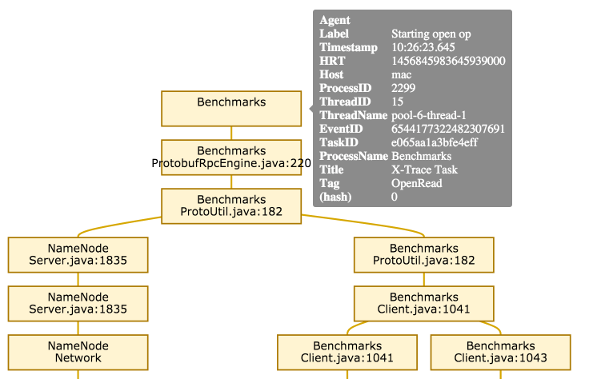

X-Trace
X-Trace is a logging framework for distributed systems. X-Trace tracks requests as they traverse different threads, processes, and machines. Logging statements that are made in the execution of a single request are aggregated to a server and grouped together. X-Trace makes it easy to see what a single request did throughout it's entire execution without having to trawl through logging statements from unrelated requests. Its main API is similar to log4j/commons logging libraries.
For more information on X-Trace, check out the research papers from NSDI '07 and INM '10.
Example
In the following example we show the use of X-Trace in HDFS, a distributed file system. We have a client process, Benchmarks, and run an HDFS process, NameNode, which is a server that receives requests from clients to look up filesystem metadata.
The Benchmarks process began with a call to XTrace.log("Starting open op"). Internally, it uses HDFS's client library to open a handle to file. The HDFS client library must look up the file on the HDFS NameNode. Inside the client library, there are two more logging statements, one in ProtobufRpcEngine.java:220 followed by ProtoUtil.java:182. Then the execution makes the RPC to the NameNode process.
In the NameNode process, the RPC is received and it begins being serviced in a thread, making a log statement in Server.java:1835.
Concurrently in Benchmarks, after sending the RPC, the client makes a further logging statement at ProtoUtil.java:182, then branches the execution by creating a second thread. After forking the new thread, the original thread logs a statement at Client.java:1041, while the new thread makes a logging statement at Client.java:1043.
At this point, the execution continued until complete. The full interactive graph can be found here. The X-Trace/Visualization page has more information on X-Trace visualizations.

Metadata Propagation using Baggage
Our implementation of X-Trace is built using Baggage as the metadata propagation layer. Any Baggage-enabled system can deploy X-Trace without additional system instrumentation.
Architecture
X-Trace runs as a client-server architecture. X-Trace enabled clients generate reports, which are similar to logging statements. Reports are sent to an X-Trace server, which persists them in the database. X-Trace reports include identifiers that enable the server to reconstruct causality between reports. The X-Trace server provides APIs and a web interface for getting reports and visualizing logs as directed, acyclic graphs.
Dynamic Instrumentation
This project also includes some automatic instrumentation aspects for wrapping log4j and commons loggers, to automatically generate X-Trace reports any time loggers are used.